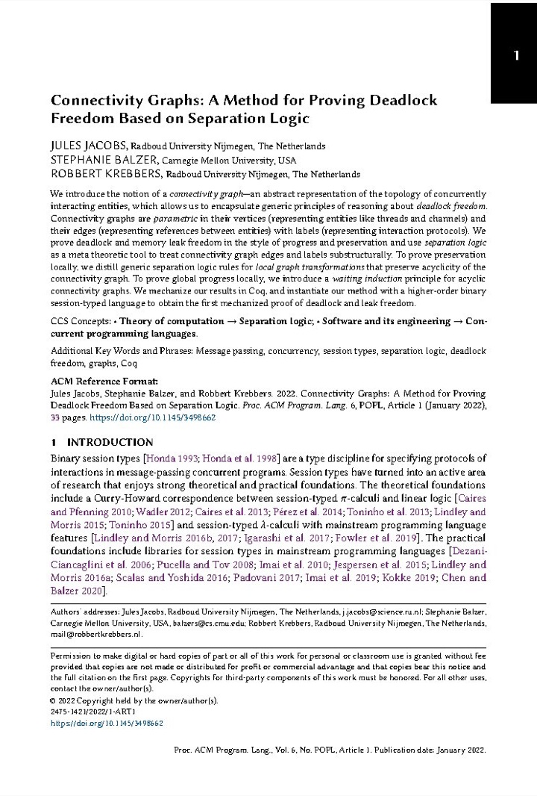

Proving deadlock freedom means reasoning about how threads and channels refer to one another. Connectivity graphs capture this topology generically, and separation logic is used to prove deadlock and memory leak freedom in the style of progress and preservation. Instantiated with a higher-order session-typed language, the method gives the first mechanized proof of deadlock and leak freedom.

Read the paperWe introduce the notion of a connectivity graph—an abstract representation of the topology of concurrently interacting entities, which allows us to encapsulate generic principles of reasoning about deadlock freedom. Connectivity graphs are parametric in their vertices (representing entities like threads and channels) and their edges (representing references between entities) with labels (representing interaction protocols). We prove deadlock and memory leak freedom in the style of progress and preservation and use separation logic as a meta theoretic tool to treat connectivity graph edges and labels substructurally. To prove preservation locally, we distill generic separation logic rules for local graph transformations that preserve acyclicity of the connectivity graph. To prove global progress locally, we introduce a waiting induction principle for acyclic connectivity graphs. We mechanize our results in Coq, and instantiate our method with a higher-order binary session-typed language to obtain the first mechanized proof of deadlock and leak freedom.
@article{jacobs2022cgraphs,
title = {Connectivity graphs: a method for proving deadlock freedom based on separation logic},
volume = {6},
ISSN = {2475-1421},
url = {https://doi.org/10.1145/3498662},
DOI = {10.1145/3498662},
number = {POPL},
journal = {Proceedings of the ACM on Programming Languages},
publisher = {Association for Computing Machinery (ACM)},
author = {Jacobs, Jules and Balzer, Stephanie and Krebbers, Robbert},
year = {2022},
month = Jan,
pages = {1--33}
}